6.2 Regions Between Curves¶
Guiding question
The graph of one function and the \(x\)-axis trap a region whose area Calculus I computes with a definite integral. What if the region is trapped between two graphs instead? The idea is the same slice-and-sum idea as in Section 6.1: cut the region into thin vertical strips, find the area of one strip (height times thickness), and add. The height of a strip is now a difference, the upper curve minus the lower curve. The difficulties are all about the curves: where do they meet, which one is on top, and what happens if they cross or if the boundary changes its formula? We also learn when it is better to cut the region into horizontal strips, and we prove that the two ways of cutting give the same area. There is a close parallel with Section 6.1: when a curve crosses the other, the integral of the difference is a net area (like displacement) and the integral of the absolute value is the total area (like distance traveled).
By the end of this section you should be able to:
-
set up and evaluate the area of a region between two curves, using vertical or horizontal strips, with the intersection points found by algebra;
-
split a region when the top or bottom boundary changes formula, and find the total area when two curves cross;
-
choose the direction of the strips that makes the work shorter, and check an answer by a second method or by geometry;
-
use symmetry to halve the work;
-
prove each of the theorems of this section.
Area between two curves¶
Calculus I measures area in this way. We take three facts about area as the meaning of area: (A1) the region between the graph of a continuous function \(h\ge0\) on \([a,b]\) and the \(x\)-axis has area \(\int_a^bh(x)\,dx\); (A2) if a region is cut into two regions that overlap only along curves, the areas add; (A3) regions that differ by a translation or by a reflection have the same area. (That area is a well-defined number with these properties is a theorem of the theory of area, met in a later course on functions of several variables; we use it here.)
Definition 6.2.1: Area of a region between two curves
Let \(f\) and \(g\) be continuous on \([a,b]\) with \(f(x)\ge g(x)\) for every \(x\) in \([a,b]\). The region between the graphs is \(R=\{(x,y):a\le x\le b,\ g(x)\le y\le f(x)\}\) and its area is
The formula has a picture. The strip above the point \(x\) has height \(f(x)-g(x)\) (upper curve minus lower curve) and thickness \(dx\), so its area is \(\bigl(f(x)-g(x)\bigr)dx\), and the integral adds all the strips. The next theorem shows that the formula is not a new idea: it follows from (A1) to (A3).
Theorem 6.2.2: The formula agrees with Calculus I
Let \(f\ge g\) be continuous on \([a,b]\) and let \(R\) be the region between their graphs.
(1) If \(g\ge0\), then the area of \(R\) obtained from (A1) and (A2) is \(\int_a^bf\,dx-\int_a^bg\,dx=\int_a^b(f-g)\,dx\).
(2) For every constant \(c\), replacing \(f\) and \(g\) by \(f+c\) and \(g+c\) does not change \(\int_a^b(f-g)\,dx\). Hence the formula of Definition 6.2.1 gives the area of \(R\) whether the curves lie above, below or across the \(x\)-axis.
Proof. (1) Let \(U\) be the region between the graph of \(f\) and the \(x\)-axis, and \(V\) the region between the graph of \(g\) and the \(x\)-axis (both over \([a,b]\)). Since \(f\ge g\ge0\), the region \(U\) is cut into \(V\) and \(R\), which overlap only along the graph of \(g\). By (A1) the areas of \(U\) and \(V\) are \(\int_a^bf\) and \(\int_a^bg\), and by (A2) \(\operatorname{area}(U)=\operatorname{area}(V)+\operatorname{area}(R)\). So \(\operatorname{area}(R)=\int_a^bf-\int_a^bg=\int_a^b(f-g)\), by the linearity of the integral.
(2) The difference \((f+c)-(g+c)=f-g\) is the same function, so the integral is the same. Now let \(m\) be the least value of \(g\) on \([a,b]\) (it exists because \(g\) is continuous on a closed interval) and take \(c=-m\). Then \(g+c\ge0\). Translating \(R\) up by \(c\) gives the region \(R_c\) between the graphs of \(f+c\) and \(g+c\), with \(\operatorname{area}(R)=\operatorname{area}(R_c)\) by (A3), and \(\operatorname{area}(R_c)=\int_a^b\bigl((f+c)-(g+c)\bigr)=\int_a^b(f-g)\) by part (1). ◻ ∎
Knowledge Check 6.2.1: Between a line and a parabola
Use Theorem 6.2.2(1) to find the area of the region between \(y=x\) and \(y=x^2\) for \(0\le x\le1\). Which graph is on top?
Pause and think 6.2.1: Why a difference?
Why is the height of a strip \(f(x)-g(x)\), and not \(\abs{f(x)}-\abs{g(x)}\) or \(f(x)+g(x)\)? Test your answer on \(f(x)=-1\) and \(g(x)=-3\) on \([0,2]\), where both graphs lie below the \(x\)-axis.
Answer and discussion
The height of a strip is the vertical distance between the curves, the top value minus the bottom value, and this is a difference whatever the signs. For \(f=-1\) and \(g=-3\) the strip between \(y=-3\) and \(y=-1\) has height \(2=f-g=-1-(-3)\), so the area is \(\int_0^22\,dx=4\). The expression \(\abs f-\abs g=1-3=-2\) gives the wrong sign and the wrong meaning, and \(f+g=-4\) is not a distance between the curves at all.
Procedure 6.2.3: Area between two curves (vertical strips)
-
Sketch the curves. Mark every point where they meet.
-
Intersections. Solve \(f(x)=g(x)\). Keep the solutions that bound the region; a given vertical line also bounds it.
-
Which is on top? Between two consecutive intersections the difference \(f-g\) is continuous and never \(0\), so it has one sign there (Intermediate Value Theorem): test one point in each piece.
-
Integrate (top \(-\) bottom) over each piece, add the pieces, and check each antiderivative by differentiating.
-
Check. The area is positive; compare with a rough estimate, with a geometric formula, or with the same area computed another way.
Top minus bottom
The order matters: a negative answer for a piece means you subtracted the wrong way round. The curve that is on top can change from piece to piece, and a single integral \(\int(f-g)\) over a stretch where the curves cross is not the area (see Theorem 6.2.9).
Example 6.2.4: A region between a line and a parabola
Find the area of the region between \(y=2x+3\) and \(y=x^2\).
Solution. Intersections. Set \(x^2=2x+3\), so \(x^2-2x-3=0\), that is \((x-3)(x+1)=0\), and \(x=-1\) or \(x=3\). The points are \((-1,1)\) and \((3,9)\). Which is on top? The graphs meet only at \(x=-1\) and \(x=3\), so one sign persists on \((-1,3)\). At \(x=0\) the line has \(y=3\) and the parabola \(y=0\): the line is on top. Integral. \(A=\int_{-1}^{3}(2x+3-x^2)\,dx\). An antiderivative is \(F(x)=x^2+3x-\frac{x^3}3\) (check: \(F'(x)=2x+3-x^2\)). Then \(F(3)=9+9-9=9\) and \(F(-1)=1-3+\frac13=-\frac53\), so
Check by a second method. Complete the square: \(2x+3-x^2=4-(x-1)^2\). With \(u=x-1\) (Theorem 8.1.1), \(\int_{-1}^3\bigl(4-(x-1)^2\bigr)dx=\int_{-2}^{2}(4-u^2)\,du=2\left(8-\frac83\right)=\frac{32}3\).
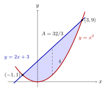
Figure. The region between the line and the parabola; the dashed gap at \(x=1\) is the largest, \(5-1=4\).
Example 6.2.5: Exponential curves cut off by a vertical line
Find the area of the region bounded by \(y=e^x\), \(y=e^{-x}\) and the line \(x=\ln3\), to the right of the \(y\)-axis.
Solution. Intersection. \(e^x=e^{-x}\) gives \(e^{2x}=1\), so \(x=0\) (the exponential is one-to-one), at the point \((0,1)\). The vertical line \(x=\ln3\) meets the curves at \((\ln3,3)\) and \(\left(\ln3,\frac13\right)\), using \(e^{-\ln3}=\frac13\). Which is on top? At \(x=1\): \(e^1\approx2.72>e^{-1}\approx0.37\), so \(e^x\) is on top on \((0,\ln3)\). Integral. \(A=\int_0^{\ln3}(e^x-e^{-x})\,dx=\Bigl[e^x+e^{-x}\Bigr]_0^{\ln3}=\left(3+\frac13\right)-(1+1)=\frac43\). Check: \(\frac d{dx}(e^x+e^{-x})=e^x-e^{-x}\).
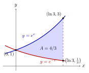
Figure. The region between \(y=e^x\) and \(y=e^{-x}\) for \(0\le x\le\ln3\).
Pause and think 6.2.2: Why do the curves not need to be positive?
In Example 6.2.4 the parabola lies partly above the \(x\)-axis and in Example 6.2.28 of the bank both curves go below it. Explain, using a vertical shift, why the formula \(\int(f-g)\,dx\) still gives the area.
Answer and discussion
Move both graphs up by a constant \(c\) large enough that both lie above the \(x\)-axis. The vertical distance between the graphs at each \(x\) is unchanged, because \((f+c)-(g+c)=f-g\), and moving a region by a translation does not change its area (A3). So the area of the original region is the area of the shifted one, which Calculus I gives as \(\int(f+c)-\int(g+c)=\int(f-g)\). In Example 6.2.28, shifting up by \(5\) turns \(y=x^2-5\) and \(y=-1\) into \(y=x^2\) and \(y=4\).
Example 6.2.6: A trigonometric region
Find the area of the region bounded by \(y=\sin x\) and \(y=\sin2x\) between \(x=0\) and their next intersection to the right.
Solution. Intersections. \(\sin2x=\sin x\) means \(2\sin x\cos x-\sin x=0\) (double-angle identity), so \(\sin x\,(2\cos x-1)=0\). Hence \(\sin x=0\) (first solution \(x=0\)) or \(\cos x=\frac12\) (first positive solution \(x=\frac\pi3\)). The region lies over \(\left[0,\frac\pi3\right]\). Which is on top? At \(x=\frac\pi6\): \(\sin\frac\pi3=\frac{\sqrt3}2\approx0.87\) and \(\sin\frac\pi6=\frac12\), so \(\sin2x\) is on top. Integral. \(A=\int_0^{\pi/3}(\sin2x-\sin x)\,dx=\Bigl[-\tfrac12\cos2x+\cos x\Bigr]_0^{\pi/3}\). (Check: the derivative is \(\sin2x-\sin x\), by the Chain Rule.) At \(\frac\pi3\): \(-\frac12\cos\frac{2\pi}3+\cos\frac\pi3=\frac14+\frac12=\frac34\); at \(0\): \(-\frac12+1=\frac12\). So \(A=\frac34-\frac12=\frac14\). Plausibility. The largest gap is about \(0.37\) and the width is about \(1.05\), so \(A\) lies between half and the whole of \(0.37\cdot1.05\approx0.38\), that is between \(0.19\) and \(0.38\); \(0.25\) fits.
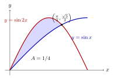
Figure. The region between \(y=\sin x\) and \(y=\sin2x\) for \(0\le x\le\frac\pi3\).
Compound regions and symmetry¶
Often the lower boundary (or the upper one) is given by different formulas on different stretches, for example when it contains an absolute value. The strip height is then a different expression on each piece, and we integrate piece by piece, splitting where the formula changes.
Example 6.2.7: A region whose lower boundary has a corner
Find the area of the region bounded above by \(f(x)=10-x^2\) and below by \(g(x)=\abs{3x}\).
Solution. By the definition of absolute value, \(g(x)=3x\) for \(x\ge0\) and \(g(x)=-3x\) for \(x<0\), so we treat \(x\ge0\) and \(x<0\) separately.
Intersections for \(x\ge0\). \(10-x^2=3x\) gives \(x^2+3x-10=0\), so \((x+5)(x-2)=0\); only \(x=2\) has \(x\ge0\). For \(x<0\): \(10-x^2=-3x\) gives \(x^2-3x-10=0\), so \((x-5)(x+2)=0\); only \(x=-2\) has \(x<0\). The meeting points are \((\pm2,6)\). Which is on top? At \(x=0\): \(f(0)=10>0=g(0)\), so \(f\) is on top on \((-2,2)\) (the curves meet nowhere else there).
The left piece, \(-2\le x\le0\), where \(g=-3x\): \(\int_{-2}^0(10-x^2+3x)\,dx=\Bigl[10x-\frac{x^3}3+\frac{3x^2}2\Bigr]_{-2}^0=0-\left(-20+\frac83+6\right)=14-\frac83=\frac{34}3\). The right piece, \(0\le x\le2\), where \(g=3x\): \(\int_0^2(10-x^2-3x)\,dx=\Bigl[10x-\frac{x^3}3-\frac{3x^2}2\Bigr]_0^2=20-\frac83-6=\frac{34}3\).
The area is \(A=\frac{34}3+\frac{34}3=\frac{68}3\approx22.67\). The two pieces are equal because the region is symmetric about the \(y\)-axis (see Theorem 6.2.8 below).
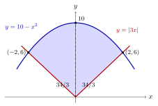
Figure. The region between \(y=10-x^2\) and \(y=\abs{3x}\): two pieces of area \(\frac{34}3\).
The symmetry that halved the work in Example 6.2.7 holds in general. Recall that \(h\) is even if \(h(-x)=h(x)\) and odd if \(h(-x)=-h(x)\).
Theorem 6.2.8: Symmetry
Let \(h\) be continuous on \([-a,a]\).
(1) If \(h\) is even, \(\int_{-a}^ah\,dx=2\int_0^ah\,dx\). If \(h\) is odd, \(\int_{-a}^ah\,dx=0\).
(2) If \(f\ge g\) are both even, the area between their graphs on \([-a,a]\) is \(2\int_0^a(f-g)\,dx\).
Proof. (1) Write \(\int_{-a}^ah=\int_{-a}^0h+\int_0^ah\). In the first integral use the substitution \(u=-x\) (Theorem 8.1.1(2) with \(g(x)=-x\), \(g'(x)=-1\) continuous): \(\int_{-a}^0h(-x)\,dx=-\int_{-a}^0h(-x)\,(-1)\,dx=-\int_{a}^{0}h(u)\,du=\int_0^ah(u)\,du\). If \(h\) is even, \(h(-x)=h(x)\) and so \(\int_{-a}^0h(x)\,dx=\int_0^ah\), giving \(2\int_0^ah\). If \(h\) is odd, \(h(x)=-h(-x)\), so \(\int_{-a}^0h(x)\,dx=-\int_{-a}^0h(-x)\,dx=-\int_0^ah\), and the two halves cancel.
(2) The difference \(f-g\) is even (a difference of even functions) and continuous, so by part (1) and the definition, \(A=\int_{-a}^a(f-g)=2\int_0^a(f-g)\). ◻ ∎
Odd pairs
If \(f\) and \(g\) are both odd, then \(f-g\) is odd and its integral is \(0\); but the area between the graphs is not \(0\). The function \(\abs{f-g}\) is even (because \(\abs{(f-g)(-x)}=\abs{-(f-g)(x)}\)), and by Theorem 6.2.9 below the area is \(2\int_0^a\abs{f-g}\,dx\).
Curves that cross: net area and total area¶
If the graphs cross inside \([a,b]\), the integral \(\int_a^b(f-g)\,dx\) adds positive and negative pieces and is a net area, exactly as \(\int_a^bv\,dt\) is the displacement. The area of the region between the graphs is the total area, which is the analogue of the distance traveled (Theorem 6.1.3).
Theorem 6.2.9: Total area between crossing curves
Let \(f\) and \(g\) be continuous on \([a,b]\) and let \(R=\{(x,y):a\le x\le b,\ \min(f,g)\le y\le\max(f,g)\}\) be the region between their graphs.
(1) The area of \(R\) is \(A=\int_a^b\abs{f(x)-g(x)}\,dx\).
(2) Let \(a=c_0<c_1<\dots<c_m=b\) be such that \(f-g\) has no zero in any open interval \((c_{j-1},c_j)\) (for example the consecutive solutions of \(f=g\) together with \(a\) and \(b\)). Then \(A=\sum_{j=1}^m\left|\int_{c_{j-1}}^{c_j}(f-g)\,dx\right|\).
(3) \(\left|\int_a^b(f-g)\,dx\right|\le A\), with equality if and only if \(f\ge g\) on all of \([a,b]\) or \(f\le g\) on all of \([a,b]\).
Proof. (1) Put \(F=\max(f,g)\) and \(G=\min(f,g)\). They are continuous, because \(F=\frac12\bigl(f+g+\abs{f-g}\bigr)\) and \(G=\frac12\bigl(f+g-\abs{f-g}\bigr)\) (check the two cases: if \(f\ge g\) then \(\abs{f-g}=f-g\) and the formulas give \(f\) and \(g\); if \(f<g\) they give \(g\) and \(f\)). Moreover \(F\ge G\) and \(F-G=\abs{f-g}\). Definition 6.2.1 applied to \(F\) and \(G\) gives \(A=\int_a^b(F-G)=\int_a^b\abs{f-g}\).
(2) On an interval \((c_{j-1},c_j)\) the continuous function \(f-g\) is never \(0\), so it keeps one sign there: if it took values of opposite signs, the Intermediate Value Theorem would give a zero between them. By continuity the same sign (or \(0\)) holds on the closed interval. If \(f-g\ge0\) on the piece, \(\int\abs{f-g}=\int(f-g)=\abs{\int(f-g)}\); if \(f-g\le0\), then \(\int\abs{f-g}=-\int(f-g)=\abs{\int(f-g)}\). Now add over the pieces, using additivity of the integral over adjacent intervals.
(3) This is Theorem 6.1.6 applied to the continuous function \(v=f-g\): \(\abs{\int_a^bv}\le\int_a^b\abs v=A\), with equality if and only if \(v\ge0\) everywhere or \(v\le0\) everywhere. ◻ ∎
Knowledge Check 6.2.2: Net area versus total area
Let \(f(x)=x\) and \(g(x)=-x\) on \([-1,1]\). Compute \(\int_{-1}^1(f-g)\,dx\) and \(\int_{-1}^1\abs{f-g}\,dx\). Which one is the area of the region between the graphs, and why do they differ?
Pause and think 6.2.3: Zero net area
Can the integral \(\int_a^b(f-g)\,dx\) be \(0\) although the graphs of \(f\) and \(g\) are different and enclose a region of positive area? What is the matching statement about displacement and distance in Section 6.1?
Answer and discussion
Yes. For \(f(x)=x\) and \(g(x)=-x\) on \([-1,1]\) the net integral is \(\int_{-1}^1 2x\,dx=0\), but the region between the graphs is two triangles of area \(1\) each, so the area is \(2\) (Knowledge Check 6.2.2). The parallel in Section 6.1 is displacement \(0\) with positive distance traveled: walking east and then back west. Net area corresponds to displacement and total area to distance traveled (Theorem 6.1.6).
Example 6.2.10: Two curves that cross inside the interval
Find (a) the area of the region between \(y=x^3\) and \(y=x\) for \(0\le x\le2\), and (b) the net area \(\int_0^2(x^3-x)\,dx\). (c) Find the area of the region enclosed by the two curves alone.
Solution. (a) Where do they cross? \(x^3-x=x(x-1)(x+1)=0\) at \(x=0,\pm1\). On \([0,2]\) the zeros are \(0\) and \(1\), so the pieces are \([0,1]\) and \([1,2]\). Which is on top? At \(x=\frac12\): \(x^3=\frac18<\frac12=x\), so the line is on top on \((0,1)\). At \(x=2\): \(8>2\), so the cubic is on top on \((1,2)\). Integrals. With the antiderivative \(\frac{x^2}2-\frac{x^4}4\) of \(x-x^3\) (check: its derivative is \(x-x^3\)):
So \(A=\frac14+\frac94=\frac52\).
(b) The net area is \(\int_0^2(x^3-x)\,dx=\Bigl[\frac{x^4}4-\frac{x^2}2\Bigr]_0^2=4-2=2\), which is \(\frac94-\frac14\): the piece below counts \(-\frac14\). As Theorem 6.2.9(3) says, \(2\le\frac52\), with strict inequality because the curves cross.
(c) The two curves alone enclose the region between \(x=-1\) and \(x=1\) (they cross at \(x=-1,0,1\)). The functions \(x^3\) and \(x\) are both odd, so by the Remark after Theorem 6.2.8 the area is \(2\int_0^1\abs{x^3-x}\,dx=2\cdot\frac14=\frac12\) (it consists of two congruent pieces, one on each side of the origin).
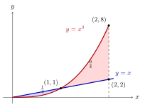
Figure. The two curves cross at \(x=1\). The area between them over \([0,2]\) is \(\frac14+\frac94=\frac52\); the net area is \(\frac94-\frac14=2\).
Example 6.2.11: Three boundary curves
Find the area of the region in the first quadrant that lies between the lines \(y=x\) and \(y=4x\) and below the hyperbola \(y=\frac1x\).
Solution. Intersections. \(y=4x\) meets \(y=\frac1x\) where \(4x=\frac1x\), so \(x^2=\frac14\) and \(x=\frac12\), at \((\frac12,2)\). The line \(y=x\) meets the hyperbola where \(x=\frac1x\), so \(x=1\), at \((1,1)\). The two lines meet at the origin. The boundary changes at \(x=\frac12\). For \(0\le x\le\frac12\) the region lies between \(y=x\) (bottom) and \(y=4x\) (top); for \(\frac12\le x\le1\) the top is the hyperbola (at \(x=\frac34\): \(\frac1x=\frac43<3=4x\), so the hyperbola is the lower of the two curves above \(x=\frac12\), hence the boundary there) and the bottom is still \(y=x\).
First piece. \(\int_0^{1/2}(4x-x)\,dx=\int_0^{1/2}3x\,dx=\frac32x^2\Big|_0^{1/2}=\frac38\). Second piece. \(\int_{1/2}^1\left(\frac1x-x\right)dx=\Bigl[\ln x-\frac{x^2}2\Bigr]_{1/2}^1=\left(0-\frac12\right)-\left(-\ln2-\frac18\right)=\ln2-\frac38\).
Hence \(A=\frac38+\left(\ln2-\frac38\right)=\ln2\approx0.693\): the rational parts cancel.
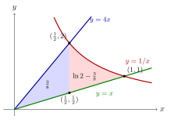
Figure. The region between \(y=x\) and \(y=4x\), below \(y=1/x\). Its area is \(\ln2\).
Integrating with respect to \(y\)¶
Sometimes the region is easier to describe by the horizontal strip: for each height \(y\) in an interval \([c,d]\), the region extends from a left curve \(x=q(y)\) to a right curve \(x=p(y)\). We need no new definition.
Theorem 6.2.12: Area with respect to \(y\)
Let \(p\) and \(q\) be continuous on \([c,d]\) with \(p(y)\ge q(y)\) for all \(y\) in \([c,d]\). The region \(S=\{(x,y):c\le y\le d,\ q(y)\le x\le p(y)\}\) has area
Proof. Reflect \(S\) in the line \(y=x\), that is, swap the coordinates of every point. The point \((x,y)\) goes to \((u,v)=(y,x)\), and the conditions \(c\le y\le d\) and \(q(y)\le x\le p(y)\) become \(c\le u\le d\) and \(q(u)\le v\le p(u)\). So the image is the region between the graphs of \(q\) and \(p\) over \([c,d]\) in the sense of Definition 6.2.1 (with \(u\) as the horizontal variable). By (A3) the two regions have the same area, and by the definition the image has area \(\int_c^d\bigl(p(u)-q(u)\bigr)\,du\), which is the stated integral with the dummy variable named \(y\). ◻ ∎
The factors have the same meaning as before: \(p(y)-q(y)\) is the length of the horizontal strip (right curve minus left curve) and \(dy\) is its thickness. To use the formula we write each boundary curve as \(x=\text{(function of }y)\).
Example 6.2.13: Two parabolas that open sideways
Find the area of the region bounded by \(x=y^2\) and \(x=6-y\).
Solution. The curve \(x=y^2\) opens to the right. Strips parallel to the \(x\)-axis are natural. Intersections: \(y^2=6-y\), so \(y^2+y-6=0\), that is \((y+3)(y-2)=0\), and \(y=-3\) or \(y=2\). The points are \((9,-3)\) and \((4,2)\). Right curve and left curve. At \(y=0\): \(x=6-y=6\) and \(x=y^2=0\), so \(x=6-y\) is the right curve on \((-3,2)\). Integral. \(A=\int_{-3}^{2}\bigl((6-y)-y^2\bigr)\,dy=\Bigl[6y-\frac{y^2}2-\frac{y^3}3\Bigr]_{-3}^{2}\). Check: the derivative of the bracket is \(6-y-y^2\). At \(y=2\): \(12-2-\frac83=\frac{22}3\). At \(y=-3\): \(-18-\frac92+9=-\frac{27}2\). So \(A=\frac{22}3+\frac{27}2=\frac{44+81}6=\frac{125}6\approx20.83\). What vertical strips would cost. For \(0\le x\le4\) the region lies between \(y=-\sqrt x\) and \(y=\sqrt x\); for \(4\le x\le9\) it lies between the line \(y=6-x\) (top) and \(y=-\sqrt x\) (bottom). That is two integrals, \(\int_0^4 2\sqrt x\,dx=\frac{32}3\) and \(\int_4^9\bigl(6-x+\sqrt x\bigr)dx=\frac{61}6\), with the same total \(\frac{32}3+\frac{61}6=\frac{125}6\). Horizontal strips needed one integral.
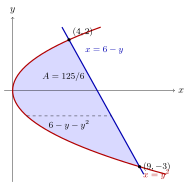
Figure. The region between \(x=y^2\) and \(x=6-y\), with one horizontal strip of length \(6-y-y^2\) (here at \(y=-1\): from \(x=1\) to \(x=7\)).
Example 6.2.14: A region bounded by a square root, a line and the axis
Find the area of the region bounded by \(y=\sqrt x\), the line \(y=x-6\) and the \(x\)-axis.
Solution. Intersection of the curve and the line. \(\sqrt x=x-6\) forces \(x\ge6\). Squaring, \(x=(x-6)^2\), so \(x^2-13x+36=0\), that is \((x-4)(x-9)=0\). The root \(x=4\) is rejected, because \(4-6<0\) (squaring introduced it); \(x=9\) works: \(\sqrt9=3=9-6\). The point is \((9,3)\). The line meets the \(x\)-axis at \((6,0)\). Vertical strips need two integrals, because the lower boundary is the \(x\)-axis for \(0\le x\le6\) and the line for \(6\le x\le9\):
The first integral is \(\frac23\,x^{3/2}\Big|_0^6=\frac23\cdot6\sqrt6=4\sqrt6\) (since \(6^{3/2}=6\sqrt6\)). The second is \(\Bigl[\frac23x^{3/2}-\frac{x^2}2+6x\Bigr]_6^9=\left(18-\frac{81}2+54\right)-\left(4\sqrt6-18+36\right)=\frac{63}2-18-4\sqrt6=\frac{27}2-4\sqrt6\). The terms in \(\sqrt6\) cancel, so \(A=4\sqrt6+\frac{27}2-4\sqrt6=\frac{27}2\).
Horizontal strips need one integral. For \(0\le y\le3\) the left boundary is the curve, written \(x=y^2\) (solve \(y=\sqrt x\) for \(x\); valid for \(y\ge0\)), and the right boundary is the line, written \(x=y+6\). They meet at \(y=3\), since \(y^2=y+6\) gives \((y-3)(y+2)=0\).
The two methods agree, as they must (Theorem 6.2.15 below explains why in a case of this kind), and the second is shorter.
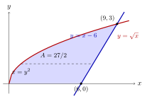
Figure. The region under \(y=\sqrt x\) and above the \(x\)-axis and the line \(y=x-6\). The dashed strip at \(y=1\) runs from \(x=1\) to \(x=7\).
Both ways of cutting must give the same number, because both compute the area of the same region. For regions between increasing curves we can also see the agreement directly, from the substitution rule and integration by parts, without any geometry.
Theorem 6.2.15: Slicing by \(x\) and slicing by \(y\) agree
Let \(\varphi\) be continuous and strictly increasing on \([a,b]\), with \(\varphi(a)=c\), \(\varphi(b)=d\) and inverse function \(\psi=\varphi^{-1}\) on \([c,d]\). Suppose that \(\varphi\) or \(\psi\) has a continuous derivative.
(1) \(\displaystyle\int_a^b\varphi(x)\,dx+\int_c^d\psi(y)\,dy=bd-ac\).
(2) Let \(f\) and \(g\) be two such functions on \([a,b]\) with \(f(a)=g(a)=c\), \(f(b)=g(b)=d\) and \(f\ge g\). Then the region between their graphs has the same area whether it is computed with vertical strips, \(\int_a^b(f-g)\,dx\), or with horizontal strips, \(\int_c^d\bigl(g^{-1}(y)-f^{-1}(y)\bigr)\,dy\).
Proof. (1) The inverse \(\psi\) of a continuous strictly increasing function is continuous and increasing (Intermediate Value Theorem), so both integrals exist. First suppose that \(\varphi\) has a continuous derivative. The substitution \(y=\varphi(x)\) (Theorem 8.1.1(2), with \(f=\psi\) and \(g=\varphi\)) and \(\psi(\varphi(x))=x\) give
Integration by parts (Theorem 8.2.1, with \(u=x\) and \(v=\varphi\)) gives \(\int_a^bx\,\varphi'(x)\,dx=\Bigl[x\varphi(x)\Bigr]_a^b-\int_a^b\varphi(x)\,dx=bd-ac-\int_a^b\varphi\). Rearranging gives (1). If instead \(\psi\) has a continuous derivative, apply what we just proved to \(\psi\) on \([c,d]\) (its inverse is \(\varphi\), and \(\psi(c)=a\), \(\psi(d)=b\)): \(\int_c^d\psi+\int_a^b\varphi=db-ca\), which is the same statement.
(2) Put \(K=bd-ac\). By part (1), \(\int_c^dg^{-1}=K-\int_a^bg\) and \(\int_c^df^{-1}=K-\int_a^bf\). Since \(f\ge g\) and both are increasing, \(g^{-1}\ge f^{-1}\): if \(y=f(x_1)\), then \(g(x_1)\le f(x_1)=y\), so \(x_1\le g^{-1}(y)\), that is \(f^{-1}(y)\le g^{-1}(y)\). The region between the graphs is \(\{g(x)\le y\le f(x)\}\), and for increasing functions this says \(f^{-1}(y)\le x\le g^{-1}(y)\); so Theorem 6.2.12 gives the area \(\int_c^d(g^{-1}-f^{-1})\,dy=\bigl(K-\int_a^bg\bigr)-\bigl(K-\int_a^bf\bigr)=\int_a^b(f-g)\,dx\). ◻ ∎
A picture of part (1)
Take \(\varphi(x)=x^2\) on \([1,2]\), so \(c=1\), \(d=4\) and \(\psi(y)=\sqrt y\). The area under the graph is \(\int_1^2x^2\,dx=\frac73\); the area between the graph and the \(y\)-axis is \(\int_1^4\sqrt y\,dy=\frac{14}3\). Together they fill the L-shaped region (the rectangle \([0,2]\times[0,4]\) without the square \([0,1]\times[0,1]\)) of area \(8-1=7=\frac73+\frac{14}3\).
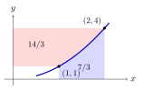
Knowledge Check 6.2.3: Horizontal strips
Write the area of the region bounded by \(x=y^2\) and \(x=4\) as an integral with respect to \(y\), and evaluate it.
Example 6.2.16: Calculus and geometry together
Find the area of the region in the first quadrant that lies inside the circle \(x^2+y^2=4\) and above the line \(y=2-x\).
Solution. In the first quadrant the circle is the graph of \(y=\sqrt{4-x^2}\). The line \(y=2-x\) meets the circle where \(\sqrt{4-x^2}=2-x\): squaring, \(4-x^2=4-4x+x^2\), so \(2x^2-4x=0\) and \(x=0\) or \(x=2\); both satisfy \(2-x\ge0\). The points are \((0,2)\) and \((2,0)\). At \(x=1\): \(\sqrt3\approx1.73>1=2-x\), so the circle is on top.
The first integral is geometry: the region under \(y=\sqrt{4-x^2}\) over \([0,2]\) is a quarter of the disk of radius \(2\), with area \(\frac14\pi\cdot2^2=\pi\). (Calculus gives the same: the antiderivative is \(F(x)=\frac x2\sqrt{4-x^2}+2\sin^{-1}\frac x2\), found by the substitution \(x=2\sin\theta\) of Procedure 8.4.4; check by differentiating. Then \(F(2)-F(0)=2\cdot\frac\pi2-0=\pi\).) The second is a triangle with legs \(2\) and \(2\): \(\int_0^2(2-x)\,dx=\Bigl[2x-\frac{x^2}2\Bigr]_0^2=4-2=2\), which is \(\frac12\cdot2\cdot2\). Hence \(A=\pi-2\approx1.14\). Check by a formula from geometry: the region is a circular segment of radius \(r=2\) and central angle \(\theta=\frac\pi2\), whose area is \(\frac{r^2}2(\theta-\sin\theta)=2\left(\frac\pi2-1\right)=\pi-2\).
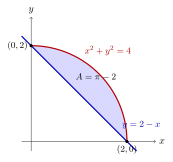
Figure. The segment of the disk above the chord \(y=2-x\): quarter disk \(\pi\) minus triangle \(2\).
Procedure 6.2.17: Choosing vertical or horizontal strips
-
Sketch the region and draw one typical strip in each direction.
-
Prefer the direction in which the same two curves bound the strip all the way across; if the top or bottom changes formula, you must split into several integrals.
-
Prefer the direction in which the boundary curves are easy to write: \(x=f(y)\) needs the curves solved for \(x\), which is easy for \(x=y^2\) and hard for \(y=x^5+x\).
-
Prefer the direction that gives the simpler integrals. When in doubt, set up both and compare.
-
If both directions are easy, do both: agreement is an excellent check (Examples 6.2.13 and 6.2.14).
Example 6.2.18: A line through the origin that bisects a region
The region \(R\) lies between the parabola \(y=x^2\) and the line \(y=x\). For which slope \(m\) with \(0<m<1\) does the line \(y=mx\) cut \(R\) into two parts of equal area?
Solution. Area of \(R\). The graphs meet where \(x^2=x\), at \(x=0\) and \(x=1\), with \(y=x\) on top, so \(\operatorname{area}(R)=\int_0^1(x-x^2)\,dx=\frac12-\frac13=\frac16\). Half of this is \(\frac1{12}\). The lower part. The line \(y=mx\) meets the parabola where \(x^2=mx\), at \(x=0\) and \(x=m\). On \((0,m)\) we have \(x^2<mx<x\) (divide by \(x>0\): \(x<m<1\)), so the line lies inside \(R\), and the part of \(R\) below it is the region between \(y=mx\) and \(y=x^2\):
Solve. \(\frac{m^3}6=\frac1{12}\) gives \(m^3=\frac12\), so \(m=2^{-1/3}\approx0.794\). This lies in \((0,1)\). The upper part then also has area \(\frac16-\frac1{12}=\frac1{12}\).
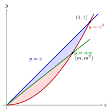
Figure. The region between \(y=x^2\) and \(y=x\) (area \(\frac16\)) is cut by \(y=mx\) into two parts of area \(\frac1{12}\) when \(m=2^{-1/3}\). The part below the green line is shaded darker.
Looking ahead¶
The slice-and-sum idea of this section is the same in the rest of the chapter. In a later section the strips become thin slabs and disks whose cross-sectional areas, often differences of squares of the functions above, are summed to give a volume; others use the length of a curve and the area of a surface of revolution. Areas of regions described by polar coordinates are treated in the chapter on parametric and polar curves; in a later course, double integrals extend the idea to regions that are not between two graphs.
Example bank¶
What’s in this bank. Fourteen further worked examples, grouped by problem type and ordered from easiest to hardest within each group.
-
Basic vertical strips (Examples 6.2.19–6.2.20): a root and a line; a rational curve and a line, using symmetry.
-
Crossing curves (Examples 6.2.21–6.2.22): net versus total area for a cubic and the \(x\)-axis; sine and cosine.
-
Compound and three-curve regions (Examples 6.2.23–6.2.24): two lines and a hyperbola; a parabola and an absolute value.
-
Horizontal strips (Examples 6.2.25–6.2.26): a line and a parabola opening sideways; a logarithm and a chord, by both methods.
-
Curves and inverse functions, curves below the axis (Examples 6.2.27–6.2.28): \(x^3\) and \(\sqrt[3]{x}\); both curves below the \(x\)-axis.
-
Unknown parameters and integration by parts (Examples 6.2.29–6.2.30): finding a height for a given area; \(\ln x\) and \((\ln x)^2\).
Group 1: Basic vertical strips¶
Example 6.2.19: A root and a line
Find the area of the region between \(y=\sqrt x\) and \(y=\frac x2\).
Solution. Intersections. \(\sqrt x=\frac x2\) gives (for \(x\ge0\)) \(x=\frac{x^2}4\), so \(x(x-4)=0\) and \(x=0\) or \(x=4\); both satisfy \(\sqrt x=\frac x2\) (\(0=0\) and \(2=2\)). Top. At \(x=1\): \(\sqrt1=1>\frac12\), so \(\sqrt x\) is on top. Integral. \(A=\int_0^4\Bigl(x^{1/2}-\frac x2\Bigr)dx=\Bigl[\frac23x^{3/2}-\frac{x^2}4\Bigr]_0^4=\frac23\cdot8-4=\frac{16}3-4=\frac43\). Check: the region sits inside the rectangle \([0,4]\times[0,2]\) of area \(8\) and clearly fills a small part of it; \(\frac43\approx1.33\) is plausible.
Example 6.2.20: A rational curve above a line
Find the area of the region bounded by \(y=\dfrac8{x^2+4}\) and \(y=1\).
Solution. Intersections. \(\frac8{x^2+4}=1\) gives \(x^2+4=8\), so \(x=\pm2\). At \(x=0\): \(\frac84=2>1\), so the curve is on top. Symmetry. Both functions are even, so by Theorem 6.2.8(2) \(A=2\int_0^2\Bigl(\frac8{x^2+4}-1\Bigr)dx\). Antiderivative. \(\int\frac8{x^2+4}dx=8\cdot\frac12\tan^{-1}\frac x2=4\tan^{-1}\frac x2\) (check: \(\frac d{dx}4\tan^{-1}\frac x2=4\cdot\frac{1/2}{1+x^2/4}=\frac8{4+x^2}\)). So
Group 2: Crossing curves¶
Example 6.2.21: A cubic and the \(x\)-axis: net area and total area
Let \(f(x)=x^3-4x\). Find \(\int_{-2}^3f\,dx\) and the total area between the graph of \(f\) and the \(x\)-axis over \([-2,3]\).
Solution. Zeros. \(x^3-4x=x(x-2)(x+2)\), so \(f=0\) at \(-2,0,2\). Signs. \(f(-1)=-1+4=3>0\), \(f(1)=-3<0\), \(f(3)=15>0\). So \(f\ge0\) on \([-2,0]\), \(f\le0\) on \([0,2]\), \(f\ge0\) on \([2,3]\). Antiderivative. \(F(x)=\frac{x^4}4-2x^2\) (check: \(F'=x^3-4x\)). Values: \(F(-2)=4-8=-4\), \(F(0)=0\), \(F(2)=-4\), \(F(3)=\frac{81}4-18=\frac94\). Net. \(\int_{-2}^3f=F(3)-F(-2)=\frac94+4=\frac{25}4\). Pieces. \(\int_{-2}^0f=F(0)-F(-2)=4\); \(\int_0^2f=F(2)-F(0)=-4\); \(\int_2^3f=F(3)-F(2)=\frac94+4=\frac{25}4\). Total. \(A=\abs4+\abs{-4}+\abs{\frac{25}4}=4+4+\frac{25}4=\frac{57}4=14.25\) (Theorem 6.2.9(2)). Indeed \(\frac{25}4\le\frac{57}4\), as part (3) requires.
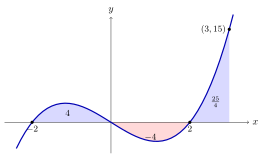
Figure. The three pieces: net area \(4-4+\frac{25}4=\frac{25}4\), total area \(4+4+\frac{25}4=\frac{57}4\).
Example 6.2.22: Sine and cosine
Find the area of the region between \(y=\sin x\) and \(y=\cos x\) for \(0\le x\le\pi\), and compare it with \(\int_0^\pi(\sin x-\cos x)\,dx\).
Solution. Crossing. \(\sin x=\cos x\) on \([0,\pi]\) only at \(x=\frac\pi4\) (where \(\tan x=1\); \(\cos x=0\) at \(\frac\pi2\) gives \(\sin x=1\ne0\), so no solutions are lost by dividing). Top. At \(0\): \(\cos0=1>0=\sin0\), so \(\cos\) is on top on \([0,\frac\pi4)\); at \(\frac\pi2\): \(1>0\), so \(\sin\) is on top on \((\frac\pi4,\pi]\). Pieces. With the antiderivative \(\sin x+\cos x\) of \(\cos x-\sin x\):
So \(A=(\sqrt2-1)+(1+\sqrt2)=2\sqrt2\approx2.83\). The net integral is \(\int_0^\pi(\sin x-\cos x)\,dx=\bigl[-\cos x-\sin x\bigr]_0^\pi=1-(-1)=2\), which is smaller, as it should be: \(2\le2\sqrt2\).
Group 3: Compound and three-curve regions¶
Example 6.2.23: Two lines and a hyperbola
Find the area of the region in the first quadrant between the lines \(y=x\) and \(y=\frac x4\) and below the hyperbola \(y=\frac4x\).
Solution. Intersections. \(x=\frac4x\) gives \(x=2\), point \((2,2)\). \(\frac x4=\frac4x\) gives \(x^2=16\), \(x=4\), point \((4,1)\). The lines meet at the origin. For \(0\le x\le2\) the region lies between \(y=\frac x4\) (bottom) and \(y=x\) (top); for \(2\le x\le4\) it lies between \(y=\frac x4\) (bottom) and \(y=\frac4x\) (top) (at \(x=3\): \(\frac43<3\) and \(\frac43>\frac34\)). First piece. \(\int_0^2\left(x-\frac x4\right)dx=\int_0^2\frac{3x}4\,dx=\frac38x^2\Big|_0^2=\frac32\). Second piece. \(\int_2^4\left(\frac4x-\frac x4\right)dx=\Bigl[4\ln x-\frac{x^2}8\Bigr]_2^4=\left(4\ln4-2\right)-\left(4\ln2-\frac12\right)=4\ln2-\frac32\), because \(4\ln4=8\ln2\). Hence \(A=\frac32+4\ln2-\frac32=4\ln2\approx2.77\).
Example 6.2.24: A parabola and an absolute value
Find the area of the region bounded above by \(y=9-x^2\) and below by \(y=\abs x+3\).
Solution. Both functions are even, so by Theorem 6.2.8(2) we may take twice the part with \(x\ge0\), where \(\abs x=x\). Intersection: \(9-x^2=x+3\) gives \(x^2+x-6=0\), \((x+3)(x-2)=0\); the solution with \(x\ge0\) is \(x=2\), at \((2,5)\). At \(x=0\): \(9>3\), so the parabola is on top.
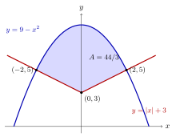
Figure. The region between \(y=9-x^2\) and \(y=\abs x+3\).
Group 4: Horizontal strips¶
Example 6.2.25: A line and a parabola opening sideways
Find the area of the region bounded by \(x=3y\) and \(x=y^2\).
Solution. Intersections. \(y^2=3y\) gives \(y(y-3)=0\): \(y=0\) and \(y=3\), points \((0,0)\) and \((9,3)\). Right and left. At \(y=1\): \(3y=3>1=y^2\), so the line is on the right. Integral. \(A=\int_0^3(3y-y^2)\,dy=\Bigl[\frac{3y^2}2-\frac{y^3}3\Bigr]_0^3=\frac{27}2-9=\frac92\).
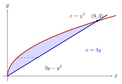
Figure. Horizontal strip at \(y=1\): from \(x=1\) to \(x=3\), length \(3y-y^2=2\). Area \(\frac92\).
Example 6.2.26: A logarithm and a chord, by both methods
Find the area of the region between \(y=\ln x\) and the line through \((1,0)\) and \((e,1)\).
Solution. The line is \(y=\dfrac{x-1}{e-1}\) (slope \(\frac1{e-1}\), value \(0\) at \(x=1\), value \(1\) at \(x=e\)). The curve and the line meet at \(x=1\) and \(x=e\). At \(x=2\): \(\ln2\approx0.693>\frac1{e-1}\approx0.582\), so the curve is on top. Vertical strips. \(A=\int_1^e\Bigl(\ln x-\frac{x-1}{e-1}\Bigr)dx\). By integration by parts (Theorem 8.2.1), \(\int\ln x\,dx=x\ln x-x\) (check: derivative \(\ln x+1-1\)). So \(\int_1^e\ln x\,dx=(e-e)-(0-1)=1\), and \(\int_1^e\frac{x-1}{e-1}dx=\frac1{e-1}\cdot\frac{(e-1)^2}2=\frac{e-1}2\). Hence \(A=1-\frac{e-1}2=\frac{3-e}2\approx0.141\). Horizontal strips. For \(0\le y\le1\), the curve is \(x=e^y\) and the line is \(x=1+(e-1)y\); the line is on the right (at \(y=\frac12\): \(1+\frac{e-1}2\approx1.86>e^{1/2}\approx1.65\)). So \(A=\int_0^1\bigl(1+(e-1)y-e^y\bigr)dy=\Bigl[y+\frac{(e-1)y^2}2-e^y\Bigr]_0^1=\left(1+\frac{e-1}2-e\right)-(0+0-1)=2+\frac{e-1}2-e=\frac{3-e}2\). The two answers agree. (Here the horizontal method needed no integration by parts.)
Group 5: Inverse functions, and curves below the axis¶
Example 6.2.27: \(x^3\) and its inverse
Find the area of the region in the first quadrant bounded by \(y=x^3\) and \(y=\sqrt[3]x\). Check it with Theorem 6.2.15.
Solution. \(x^3=x^{1/3}\) gives \(x=0\) or \(x^{8/3}=1\), i.e. \(x=1\). At \(x=\frac18\): \(x^{1/3}=\frac12>\frac1{512}=x^3\), so the cube root is on top. \(A=\int_0^1\bigl(x^{1/3}-x^3\bigr)dx=\Bigl[\frac34x^{4/3}-\frac{x^4}4\Bigr]_0^1=\frac34-\frac14=\frac12\). Check with Theorem 6.2.15(1): \(\varphi(x)=x^3\) on \([0,1]\) has inverse \(\psi(y)=y^{1/3}\), and \(\int_0^1x^3+\int_0^1y^{1/3}\,dy=\frac14+\frac34=1=1\cdot1-0\cdot0\).
Example 6.2.28: Both curves below the axis
Find the area of the region between \(y=x^2-5\) and \(y=-1\).
Solution. Intersections. \(x^2-5=-1\) gives \(x=\pm2\). At \(x=0\): \(-5<-1\), so the line is on top. The whole region lies below the \(x\)-axis. Subtract (top \(-\) bottom): \((-1)-(x^2-5)=4-x^2\). By symmetry,
Check by shifting (Theorem 6.2.2(2)): moving both curves up \(5\) gives \(y=x^2\) and \(y=4\), whose area is \(\int_{-2}^2(4-x^2)\,dx=\frac{32}3\) again. Note that no absolute values were needed; the area comes out positive without them.
Group 6: Unknown parameters and integration by parts¶
Example 6.2.29: Which height gives a prescribed area?
For which \(c>0\) does the region between \(y=x^2\) and the horizontal line \(y=c\) have area \(36\)?
Solution. The curves meet where \(x^2=c\), at \(x=\pm\sqrt c\), and the line is on top. By symmetry, \(A(c)=2\int_0^{\sqrt c}(c-x^2)\,dx=2\Bigl[cx-\frac{x^3}3\Bigr]_0^{\sqrt c}=2\left(c^{3/2}-\frac{c^{3/2}}3\right)=\frac43c^{3/2}\). Setting \(A(c)=36\): \(c^{3/2}=27\), so \(c=27^{2/3}=9\). (Check: \(\frac43\cdot9^{3/2}=\frac43\cdot27=36\). Since \(A(c)\) is increasing in \(c\), there is only one solution.)
Example 6.2.30: Logarithm and its square
Find the area of the region between \(y=\ln x\) and \(y=(\ln x)^2\).
Solution. Intersections. Put \(u=\ln x\): \(u=u^2\) gives \(u=0\) or \(u=1\), i.e. \(x=1\) or \(x=e\). For \(1<x<e\) we have \(0<\ln x<1\), and then \((\ln x)^2<\ln x\) (multiply \(\ln x<1\) by \(\ln x>0\)), so \(\ln x\) is on top. \(A=\int_1^e\bigl(\ln x-\ln^2x\bigr)dx\).
Antiderivatives (by parts). \(\int\ln x\,dx=x\ln x-x\). For \(\int\ln^2x\,dx\) take \(u=\ln^2x\), \(dv=dx\), so \(du=\frac{2\ln x}x\,dx\) and \(v=x\): \(\int\ln^2x\,dx=x\ln^2x-2\int\ln x\,dx=x\ln^2x-2x\ln x+2x\) (Theorem 8.2.1). Check by differentiating: \(\ln^2x+2\ln x-2\ln x-2+2=\ln^2x\). Evaluate. An antiderivative of \(\ln x-\ln^2x\) is \(G(x)=-x\ln^2x+3x\ln x-3x\). \(G(e)=-e+3e-3e=-e\) and \(G(1)=-3\), so \(A=-e-(-3)=3-e\approx0.282\).
Group 7: Proofs¶
Example 6.2.31: Archimedes’ parabolic segment
Prove: for \(p<q\), the area between the parabola \(y=x^2\) and the chord joining the points of the parabola with \(x=p\) and \(x=q\) is \(\dfrac{(q-p)^3}6\). Check with \(p=1\), \(q=4\).
Proof. The chord through \((p,p^2)\) and \((q,q^2)\) has slope \(\frac{q^2-p^2}{q-p}=p+q\), so it is \(y=p^2+(p+q)(x-p)=(p+q)x-pq\). The chord minus the parabola is \((p+q)x-pq-x^2=-(x-p)(x-q)=(x-p)(q-x)\), which is \(\ge0\) on \([p,q]\); so the chord is on top. Put \(L=q-p\) and \(u=x-p\) (Theorem 8.1.1; then \(q-x=L-u\) and \(u\) runs from \(0\) to \(L\)):
Check. \(p=1\), \(q=4\): the chord is \(y=5x-4\), and \(\int_1^4(5x-4-x^2)\,dx=\Bigl[\frac{5x^2}2-4x-\frac{x^3}3\Bigr]_1^4=\left(40-16-\frac{64}3\right)-\left(\frac52-4-\frac13\right)=\frac83+\frac{11}6=\frac92=\frac{3^3}6\).
Example 6.2.32: Powers and their inverse powers
Prove: for every real \(n>1\) the region in the first quadrant between \(y=x^n\) and \(y=x^{1/n}\) has area \(\dfrac{n-1}{n+1}\). Check with \(n=3\) and \(n=2\).
Proof. The curves meet where \(x^n=x^{1/n}\), that is at \(x=0\) and \(x=1\) (for \(x>0\) take logarithms: \(n\ln x=\frac1n\ln x\), so \(\left(n-\frac1n\right)\ln x=0\) and \(\ln x=0\) because \(n\ne\frac1n\)). For \(0<x<1\) we have \(\ln x<0\) and \(\frac1n<n\), so \(\frac1n\ln x>n\ln x\); therefore \(x^{1/n}>x^n\) and the root is on top. Then
using \(\frac1{1/n+1}=\frac n{1+n}\) (the antiderivatives vanish at \(x=0\) because the exponents \(\frac1n+1\) and \(n+1\) are positive).
Check. \(n=3\): \(\frac24=\frac12\), as in Example 6.2.27. \(n=2\): \(\int_0^1(\sqrt x-x^2)\,dx=\frac23-\frac13=\frac13=\frac{2-1}{2+1}\).
Answers and discussion¶
Knowledge Check 6.2.1. At \(x=\frac12\): \(x=\frac12>\frac14=x^2\), so \(y=x\) is on top. \(A=\int_0^1(x-x^2)\,dx=\Bigl[\frac{x^2}2-\frac{x^3}3\Bigr]_0^1=\frac12-\frac13=\frac16\).
Knowledge Check 6.2.2. \(\int_{-1}^1(f-g)\,dx=\int_{-1}^12x\,dx=\bigl[x^2\bigr]_{-1}^1=0\) and \(\int_{-1}^1\abs{2x}\,dx=2\int_0^12x\,dx=2\). The area of the region between the graphs is \(2\): two triangles, one on each side of the \(y\)-axis, each with a vertical side of length \(2\) at \(x=\pm1\) and height \(1\), so each has area \(\frac12\cdot2\cdot1=1\). The two numbers differ because \(f-g=2x\) changes sign at \(0\): the net integral lets the part below cancel the part above, while the area counts both as positive (Theorem 6.2.9).
Knowledge Check 6.2.3. The curves \(x=y^2\) and \(x=4\) meet at \(y=\pm2\), and \(x=4\) is on the right. \(A=\int_{-2}^2(4-y^2)\,dy=2\Bigl[4y-\frac{y^3}3\Bigr]_0^2=2\left(8-\frac83\right)=\frac{32}3\).